È possibile perdere peso senza diete e sport? Keton Aktiv dimostra la propria efficacia!
- SALUTE
- INTEGRATORI ALIMENTARI
- ALIMENTAZIONE
- PERDITA DI PESO

Impressionante il 'prima' e il 'dopo', vero?
Vi presentiamo Anna Wild, una giovane scienziata che ha contribuito allo sviluppo dell’innovativo integratore dimagrante Keton Aktiv. Quanto tempo pensate sia passato tra la prima e la seconda foto?
Anna è una dietologa. Ed è stata lei a trovare una formula che rendeva possibile perdere peso senza dieta o esercizio fisico.
Invece questa è Sara. Ha partecipato alle sperimentazioni cliniche di Keton Aktiv e ha perso 19 chili in tre mesi!
Anche Katya ha partecipato alle sperimentazioni. La foto mostra il suo risultato dopo tre mesi di assunzione di Keton Aktiv.
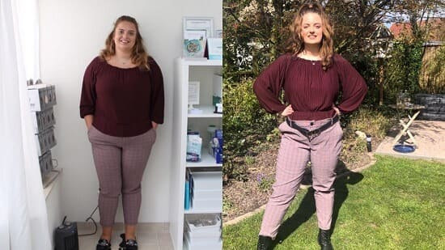E questo è il fratello di Katya. Lui ha assunto Keton Aktiv dopo che la sua sicurezza era stata confermata.
Anna ha tenuto una conferenza ad Oxford. Ha fatto una presentazione che ha stupito persino i professori!
Ha iniziato il suo discorso in questo modo:
"Molte persone potrebbero ottenere gli stessi risultati. Senza diete o allenamenti estenuanti. La natura ci ha già dato tutto ciò di cui abbiamo bisogno!".
Nella sua presentazione, Anna ha spiegato in dettaglio cosa rende Keton Aktiv così efficace.
Come è iniziato tutto?
Anna non sempre era in sovrappeso. Ma lo studio richiedeva troppo tempo e non ne aveva mai abbastanza per seguire un’alimentazione corretta e fare esercizio fisico. Così durante gli anni dello studio Anna ha messo su più di 30 kg.
E come dietologa, se ne vergognava. Ha raggiunto il successo accademico e si è unita ad un gruppo di scienziati che stava lavorando sulla formula di Keton Aktiv.
I tentativi di creare una formula perfetta per la perdita di peso si sono protratti per molti mesi. Anna ammette che a volte piangeva dalla disperazione e pensava che il suo lavoro scientifico non avrebbe mai portato al risultato desiderato. Tuttavia, dopo un po', con l'aiuto e il sostegno dei suoi colleghi, è emerso il primo campione di Keton Aktiv.
Anna divenne ufficialmente la prima volontaria delle sperimentazioni cliniche.
Come agisce?
La giusta combinazione di ingredienti naturali promuove un'efficace perdita di peso. Il prodotto favorisce il metabolismo lipidico e ha inoltre un effetto indiretto sulla produzione della leptina.
La leptina è un piccolo ormone di natura proteica che è responsabile della regolazione dell'appetito. Grazie a questa sostanza ci sentiamo sazi. A causa di uno squilibrio dei livelli di leptina nell' organismo, le persone mangiano più cibo di quello di cui hanno effettivamente bisogno, perché non si sentono sazie.
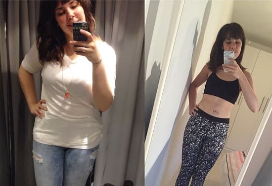Un altro risultato! La ragazza ha chiesto di non divulgare il suo nome.
Metabolismo lento non è un ostacolo per Keton Aktiv.
Anche se il tuo metabolismo è lento. Anche se hai lottato con il sovrappeso per tutta la vita. O anche se vuoi semplicemente perdere molti chili prima del matrimonio imminente o prima di un qualsiasi evento importante... Non preoccuparti, Keton Aktiv è all'altezza del compito.
Ed ecco degli esempi viventi di ciò:
Questo è Giovanni. Ha 62 anni. La differenza tra le foto è di sole sei settimane. Ha perso peso appositamente per il compleanno di sua figlia.

Questa è Alice. Ha 68 anni e ha perso peso dopo una lunga malattia per tornare ad essere di nuovo attiva!
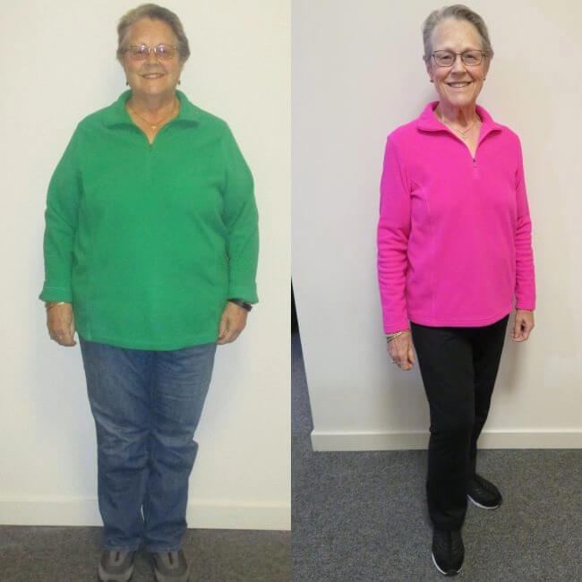E questo è Piero, 49 anni. Il suo sovrappeso era dovuto semplicemente alla pigrizia.
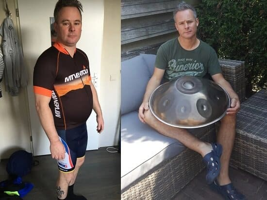Tutto ciò di cui hai bisogno è Keton Aktiv. E questo è tutto.
Non avrai più bisogno di un altro integratore per la perdita di peso, di una dieta o di un piano di esercizi.
Perché?
Perché Keton Aktiv insegna al tuo corpo a perdere peso correttamente. Così i chili in più non torneranno più!
% DEI PARTECIPANTI AL TEST CHE HANNO PERSO PESO E HANNO MANTENUTO IL RISULTATO
- ― Dieta classica
- ― Keton Aktiv
| 33% |
| 67% |
Cosa è Keton Aktiv?
Ogni ingrediente di Keton Aktiv è volto ad aiutarti a perdere peso in modo graduale ed efficace. Non perderai massa muscolare! Solo il grasso e l'acqua in eccesso che si accumula nei tessuti, aggiungendo volume e provocando gonfiori.
Basta guardare i risultati medi della perdita di peso di chi ha seguito una dieta chetogenica e di chi ha assunto Keton Aktiv:
PERDITA DI PESO IN 3 MESI:
- ― Dieta chetogenica
- ― Keton Aktiv
| 9 chilogrammi |
| 15 chilogrammi |
Non è necessario seguire una dieta o fare esercizio fisico per ottenere risultati desiderati.
Se le statistiche non sono sufficienti, date un'occhiata ai risultati di queste due donne:
Una partecipante allo studio che ha assunto Keton Aktiv. È riuscita a dimagrire di 30 kg.
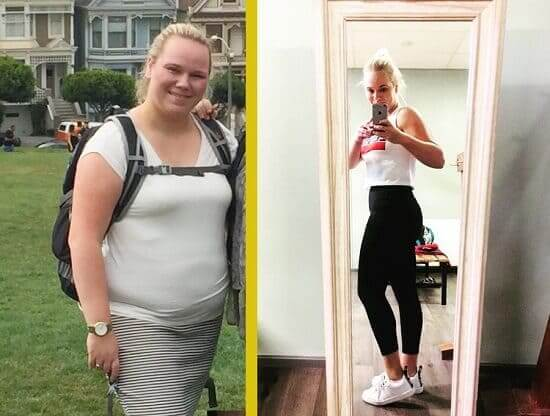Un’altra partecipante allo studio che ha perso peso seguendo la dieta chetogenica. È dimagrita di 15 kg.

Keton Aktiv è semplice ed efficace!
Keton Aktiv è facile da assumere. Il dimagrimento avviene senza dieta o esercizio fisico, ma se l’assunzione del prodotto è combinata con un’alimentazione corretta e l’allenamento, l'effetto sarà ancora più notevole!
È Silvia. Ha perso 17 kg in 3 mesi di assunzione di Keton Aktiv.
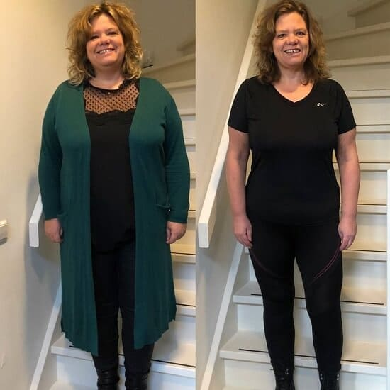Questo invece è Lorenzo. Tra le due foto sono passate solo 6 settimane! Lui, tra l'altro, non è riuscito a rinunciare alla birra e ogni tanto la beveva anche durante le sperimentazioni.
Hai già immaginato quanto ti piacerà il tuo nuovo corpo? Come potrai andare in spiaggia senza vergognarti? Quanti bei vestiti potrai indossare?
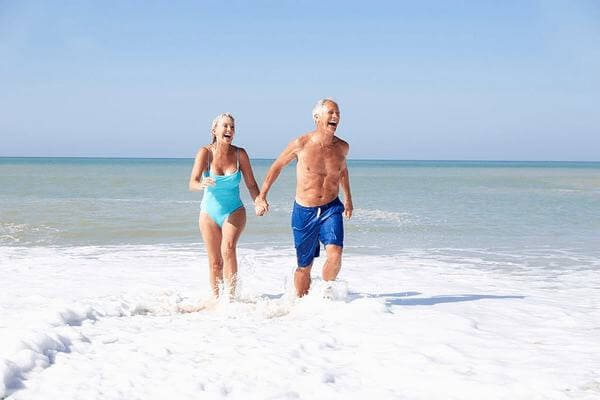Il peso potrebbe tornare?
I partecipanti allo studio sono stati monitorati per 6 mesi dopo aver terminato il ciclo di Keton Aktiv. Durante questo periodo, l'87% dei partecipanti ha mantenuto il peso forma raggiunto con poco o nessuno sforzo!
Potrai dimenticare dell'effetto yo-yo quando i chili persi ritornano portando con sé “gli amici” e la cifra sulla bilancia diventa ancora più alta di prima.
Keton Aktiv è sicuro?
Le statistiche degli studi clinici che riguardano la questione degli effetti collaterali sembrano molto incoraggianti. Keton Aktiv è stato confrontato con bruciagrassi classici.
La percentuale di coloro che hanno avuto effetti collaterali
- ― Bruciagrassi classici
- ― Keton Aktiv
| 18% |
| 72% |
Queste cifre parlano da sé!

È Grazia. Ha 72 anni, quindi temeva giustamente gli effetti collaterali, ma l'assunzione di Keton Aktiv è stata molto più facile del previsto.
Qualche altro parere
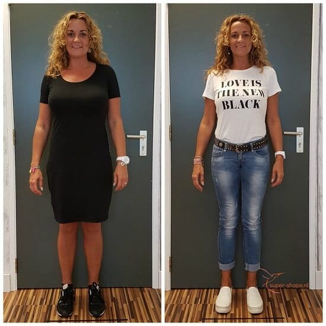
"Provateci! Ho perso 13 chili in un mese."
Elisa
"Con l'avanzare dell'età, ho iniziato a pesare troppo. Nessuna dieta o esercizio fisico mi ha aiutato. Con
Keton Aktiv ho perso quasi 15 kg in 2,5 mesi!"
Matteo
"Ho perso 7 kg in sei settimane! Qualcuno potrebbe dire che non sono molti, ma mi ci è voluto molto tempo per
trovare un metodo che mi aiutasse a perderli e tornare in forma."
Margherita
Сome acquistare Keton Aktiv?
È molto semplice: gira la ruota della fortuna per vincere il tuo sconto personale e poi compila il modulo d'acquisto. Un nostro consulente ti ricontattera per definire l’ordine!
Il pagamento è in contanti alla consegna oppure, se preferisci, in anticipo con carta di credito o bonifico!
TENTA LA FORTUNA!
L'offerta è valida fino al:
PRONTO?
Premi il pulsante GIRA e vinci uno sconto! Buona fortuna!

Lisa
Guardate il mio risultato dopo aver assunto Keton Aktiv per due mesi!! Sono stracontenta!!
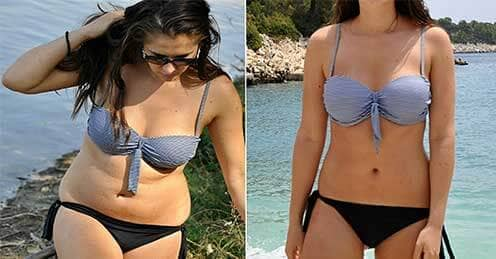Valentina
Ottimo risultato! Sei bellissima!
Giorgia
I cambiamenti più importanti avvengono dentro di te. Prima si cambia esteriormente e poi interiormente: emotivamente, ti senti più felice che mai!
Donatella
Sono assolutamente d'accordo! Dopo il mio dimagrimento con Keton Aktiv, mio marito si è interessato di nuovo a me, siamo alla nostra seconda luna di miele e facciamo sesso più spesso di 20 anni fa! La parte migliore è che perdere peso non richiede alcuno sforzo, è così facile!
Filippo
Ecco le mie foto. Mi vergogno così tanto del mio aspetto di una volta! Sapevo che il mio peso era elevato, quindi ad un certo punto ho iniziato a fare letteralmente tutto quello che potevo. Mi sono messo a dieta, cioè ho iniziato a mangiare in maniera sana, mi sono iscritto in palestra e mi allenavo con personal trainer... ma ho cominciato a vedere i risultati davvero tangibili quando ho aggiunto Keton Aktiv al mio programma.
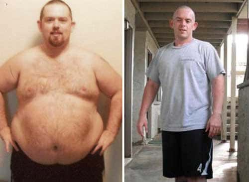Paolo
Confermo! Keton Aktiv funziona alla grande e anche nelle aree problematiche, dimagrisci lì dove serve! È ovvio fin dalle prime settimane che il prodotto funziona.
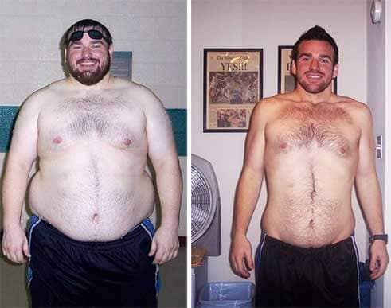Contessa
Sorprendente! Il primo dimagrante che ha avuto effetto su di me! Straordinario!
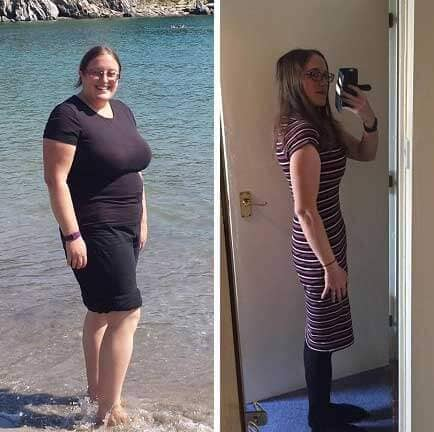Camilla
Sono così felice di aver trovato Keton Aktiv! La qualità della mia vita è migliorata così tanto. Sono di nuovo una donna felice.... Grazie!
Elisabetta
Da quando sono dimagrita tutti mi dicono che sembro più giovane! Una volta mi vergognavo del mio aspetto, ma ora vado in giro con orgoglio!
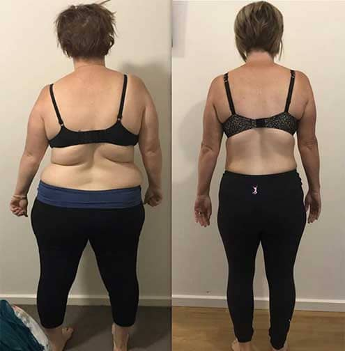Matteo
Io e mia moglie abbiamo fatto il ciclo di trattamento di tre mesi e abbiamo perso più di 50 kg in due, e questo senza diete e allenamenti. Questo prodotto ha un’ottima composizione, è molto salutare...
Caterina
Oggi, chiunque può avere un corpo bello e snello, non solo quelle poche persone con una buona genetica e molto tempo libero per allenarsi in palestra ogni giorno.
Andrea
Mi ci è voluto solo un mese e mezzo per riportare il mio peso alla norma. Dimagrimento più veloce di sempre.